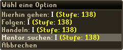

")
Das Mentorensystem
Einführung
Beachtet, dass ihr keine Gegenstände herstellen könnt, mit denen man nicht handeln kann, die für ein Abenteuer, Minispiel oder eine Aufgabenliste (die Aufgabe wird in dem Fall nicht durchgestrichen) benötigt werden. Außerdem kann es nicht mit Fertigkeiten benutzt werden, mit denen man Ressourcen sammelt (wie Holzfällerei oder Bergbau). Es gibt sehr viele Sachen, für die ihr selbst eure Fertigkeitsstufe trainieren müsst. Ihr könnt nur Gegenstände herstellen, die ihr auch durch einen Handel erhalten könntet. Es gibt also immer noch sehr viele gute Gründe, selbst seine Fertigkeiten zu trainieren!
Wichtiger Hinweis: Das Mentorensystem wurde eingebaut, um es Spielern einfacher zu machen, Hilfe zu erhalten. Falls ihr vor dem Update einen hochstufigen Freund hattet, konntet ihr alles schon ohne das System erledigen. Jetzt können Spieler aber Hilfe erhalten, ohne einem unfairen Handel zustimmen zu müssen. Falls ihr also jemanden findet, der euch beim Kochen hilft, hätte dieser Spieler euch vor dem Update auch ein Gericht gekocht. Das System ist also kein Ersatz für die harte Arbeit, mit der ihr selbst die Fertigkeiten trainiert.
Hilfe suchen
 Falls ihr Schmieden auf Stufe 42 trainiert habt und einen Stahl-Plattenpanzer (benötigt Stufe 48) herstellen möchtet, so musstet ihr bisher einen Freund mit der ausreichenden Stufe in Schmieden fragen, ob er den Gegenstand für euch herstellen könnte, ihm die Stahl-Barren geben und warten, bis er euch das Rüstzeug herstellt. Mit dem Mentorensystem kann euer Freund euch seine Stufe in Schmieden 'ausleihen', sodass ihr den Gegenstand selbst herstellen könnt.
Um ein Mentorengesuch zu schicken, müsst ihr den Spieler nur rechtsklicken und 'Mentor suchen' auswählen (wie auf dem Bild links dargestellt).
Hilfe anbieten

Die angezeigten Fähigkeiten sind die, in denen ihr helfen könnt. Ihr werdet bemerken, dass es keine Optionen gibt, mit Kampffähigkeiten zu helfen. Dies dient eurem eigenen Schutz, denn während ihr helft, könnt ihr euch nicht bewegen oder selbst eure Fähigkeiten verwenden. Das wurde so entwickelt, damit niemand die doppelte Anzahl der EP verdienen kann.
Um damit anzufangen, zu helfen, wählt die Fähigkeit oder die Fähigkeiten aus, in der oder in denen ihr dem anderen Spieler helfen wollt, in dem ihr auf die Fähigkeit klickt. Dadurch werden sie markiert, wie ihr unten sehen könnt:

Da ihr aussuchen könnt, in welcher Fertigkeit ihr jemandem helft, müsst ihr keine Angst davor haben, Erfahrung in einer Fertigkeit zu erhalten, in der ihr gar keine Erfahrung haben möchtet.
Um als Mentor zurückzutreten, müsst ihr nur das 'X' in der oberen rechten Ecke des Mentoren-Spielfensters klicken. Falls euer Schützling sich zu weit von euch entfernt (20 Felder), wird die Hilfe ebenfalls abgebrochen.
| Wenn ihr einen Mentor habt, wird das durch ein Symbol am unteren rechten Spielfensterrand dargestellt. | |
 |
Um zu bestimmen, wer euch um Hilfe bitten kann, könnt ihr auf die Hilfe-Schaltfläche rechtsklicken. Ihr könnt zwischen 'An', 'Freunde' und 'Aus' auswählen. |
Anmerkungen
Es gibt ein paar Restriktionen und Ausnahmen für das Mentorensystem.
- Innerhalb von 24 Stunden könnt ihr als Mentor nur 30.000 EP verdienen. Wenn ihr dieses Limit erreicht, wird der Text in eurem Spielfenster rot und der Schützling erhält eine Nachricht, dass ihr ihm nicht mehr helft.
- Das Mentorensystem kann nicht benutzt werden, um Zutritt zu Gilden zu erhalten.
- Ihr könnt jemanden nicht bei einem Abenteuer, einer Aufgabenliste (die Person kann die Aufgabe nicht abschließen, wenn ihr ihr helft) oder einem Minispiel helfen.
- Nicht-Mitgliedern kann nicht bei Mitglieder-Fertigkeiten geholfen werden.
Ausnahmen
Wichtiger Hinweis: Das Mentorensystem kann für folgende Kampffertigkeiten nicht benutzt werden: Lebenspunkte, Angriff, Stärke, Fernkampf, Gebet, Verteidigung, Berserker, Beschwörung - Außerdem: Gewandtheit, Funkenschlagen, Diebstahl, Kerkerkunde - Fertigkeiten die zum Sammeln von Ressourcen benutzt werden: Holzfällerei, Bergbau, Fischen, Jagen. Das wurde so eingerichtet, da wir Spieler dazu ermutigen wollen, mit Ressourcen zu arbeiten, die sie selbst gesammelt haben.
Hier eine Liste der Einschränkungen:
| Fertigkeit | Einschränkungen |
| Runenfertigung | Ihr könnt nur mehrere Runen pro Essenz erhalten, wenn die Stufe des Mentors hoch genug ist. |
| Handwerk | Ihr könnt keine dämonischen Symbole, Blitzableiter oder Silvthril-Stäbe herstellen (da dies Abenteuer-Gegenstände sind). |
| Bognerei | Mit dem Mentorensystem können keine Oger-Pfeile (da dies Quest-Gegenstände sind) oder Blurit-Bolzen (da sie nicht handelbar sind) hergestellt werden. |
| Baukunst | Ihr könnt nur Bausätze herstellen. |
| Landwirtschaft | Ihr könnt keine Bäume, Büsche, Calquat oder Kakteen anpflanzen (da die eingetopften Versionen nicht handelbar sind). Falls ihr später eure Ernte ohne Mentor bekommen möchtet, erhaltet ihr dafür keine EP, wenn ihr nicht die benötigte Stufe besitzt. |
| Magie | Falls ihr Hilfe bei Mondzaubern benötigt, muss euer Zauberbuch darauf eingestellt sein. Vom normalen Zauberbuch können mit dem Mentorensystem nur folgende Zauber gesprochen werden:
|
| Schmieden | Um Wurfpfeile zu schmieden, müsst ihr Die Touristenfalle abgeschlossen haben. Für Kampfklauen das Abenteuer Das Todesplateau. Ihr könnt keine Blurit-Gegenstände herstellen (da diese nicht handelbar sind). |
| Kochen | Gerichte aus der Gnomenküche können nicht zubereitet werden (da sie im Minispiel Gnomen-Restaurant benutzt werden). Ihr könnt keine Lava-Aale kochen (da diese in Abenteuern benutzt werden). |
| Pflanzenkunde | Sanfews Serum, Guthix' Gleichgewicht, Blamschnecken-Öl oder Relicyms Balsam können nicht hergestellt werden (da sie in Abenteuern verwendet werden). Unhandelbare Tränke können ebenfalls nicht hergestellt werden (beispielsweise Übermaßtränke). |

Weitere Artikel in Steuerung
|
|
|
Weiterführende Informationen Wenn euch dieser Artikel nicht weitergeholfen hat, könnt ihr in den folgenden Kapiteln der RuneScape-Webseite mehr Informationen finden:
|
|